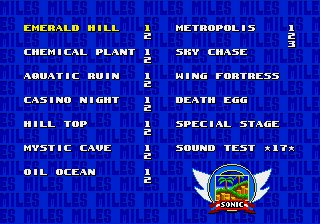
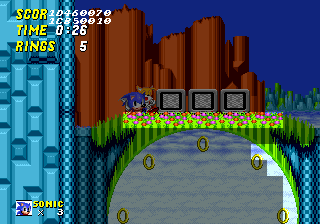
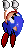
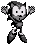
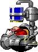

Test test

| ** Press '''A''' to move forward one object. |
| ** Hold '''A''' and press '''C''' to move backward one object. |
| ** Press '''C''' to place the object. |
* While the game is paused, some debugging options are available:
| ** Press '''A''' to go back to the title screen. |
| ** Press and hold '''B''' to slow down the game by 50%. |
| ** Press '''C''' to advance the game by one frame. |
In addition, if Sonic dies, he can be revived by entering placement mode,
moving to a safe spot, and exiting. Trying to place an object in this death
state will freeze the game, however. You must also be playing as Sonic, as
Tails cannot enter object placement mode.
"Night Vision" Mode

Go to the Level Select screen, enable Debug Mode, then hold '''C''' and
press '''Start''' when selecting a level. This will cause the console's VDP
to activate a debug function: background graphics drawn behind the sprite
layer will be covered with a translucent black overlay.
Requirement:
The system
When.
|
Graphic |
Frame |
Description |
|
 |
52-53
|
An animation very similar to one used in Wing Fortress Zone when Sonic grabs the panels on the side of the ship. However, this is vertical. An updated version of this also exists in Sonic 3, where it similarly also ended-up unused. |
|  | 5E | An alternate death frame, defined in animation 16. This returns from (and is also unused in) Sonic 1. It also returns in Sonic 3 and Sonic & Knuckles |
|  | Unused CPZ Animation | There's an unused animation for Dr. Robotnik accidentally dropping the blue goop on his own head in the Chemical Plant Zone fight. This animation has been around since the Nick Arcade prototype, but it was never implemented. There's a fix to implement the lost animation [http://info.sonicretro.org/SCHG_How-to:Restore_lost_CPZ_boss_feature here]. |
Microsoft, SEGA, Sonic Team.
The names of actual companies and products mentioned herein may be the trademarks of their respective owners.


Copyright © 2003-2018 Silver Sonic 1992, Chainspike, broken120x120. All rights reserved. (Fake copyrights are fun)